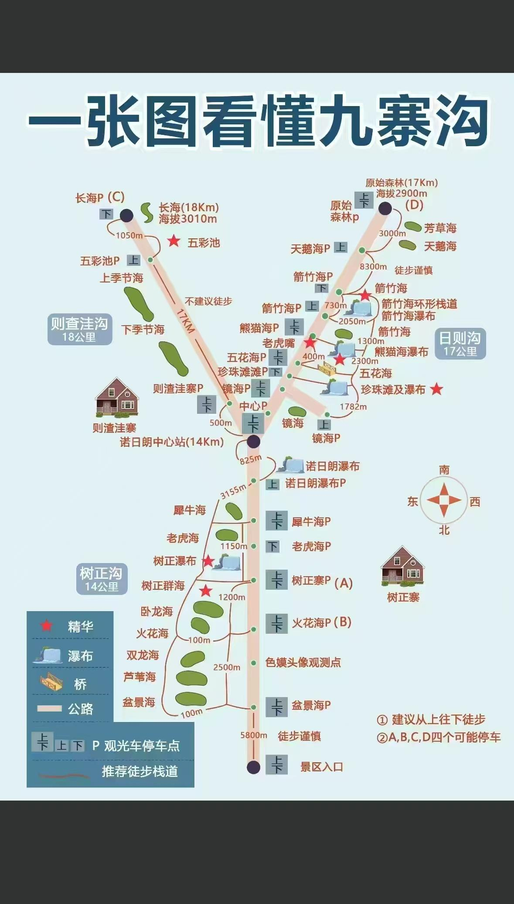
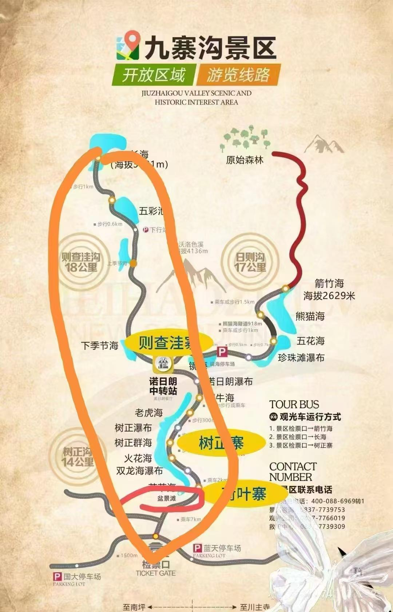
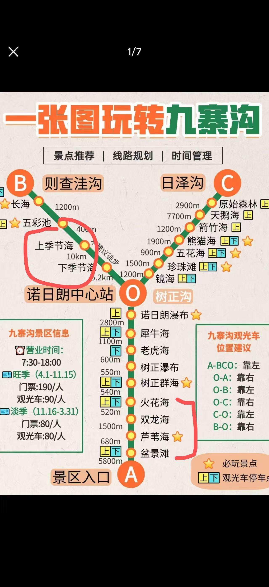

五一川西出游攻略
4.29 — 5.5 · 成都 · 九寨沟 · 乐山 · 四女行
出发前必须完成（现场无票）
- 九寨沟门票 — 公众号"九寨沟"或"阿坝旅游网"，约190元/人，提前3-5天
- 乐山大佛 — 公众号"乐山大佛景区"，约80元/人
- 熊猫基地 — 公众号"成都大熊猫繁育研究基地"，约55元/人，提前3天
- 高铁 — 成都东→黄龙九寨 C5782 06:45发，二等座143元，尽早抢
天气预报（4.23更新，出发前请复查）
4/29
成都
28/16
多云
4/30
九寨沟
23/11
雨转阴
5/1
九寨沟
21/9
持续降雨
5/2
九寨→乐山
22/26
九雨·乐阴
5/3
乐山
25/19
雨转阴
5/4
成都
26/19
有雨
5/5
成都
27/18
雨转阴
九寨沟 5/1 最低仅9度，必备：防水冲锋衣 + 折叠伞 + 防滑运动鞋。木栈道雨天极滑，九曲栈道禁穿裙子拖鞋。
Day 1
抵达成都 · 休息调整
4.29 周二 · 到达日，节奏轻松
28/16 多云
09:00
天府机场T2 → 成都东酒店
地铁18号线直达（33分钟）。建议住东站附近，明早6:45高铁步行即到。
11:00–13:00
入住酒店，大件行李留成都
只打包去九寨沟需要的物品：冲锋衣、换洗衣物、防水包。
13:00–14:30
午餐
- 钟水饺（提督街总店）— 红油钟水饺+甜水面，人均25-40
- 龙抄手（春熙路店）— 红汤/清汤/海味三种口味，人均30-50
- 陈麻婆豆腐（青华路旗舰店）— 发源地，人均50-70
14:30–18:30
下午Citywalk
大慈寺 → 太古里 → 锦江河边散步（傍晚好拍）。体力可的话打车去宽窄巷子。
19:00–21:00
晚餐：火锅 / 串串
- 蜀九香火锅 — 本地人气，人均100-130，提前1h取号
- 钢管厂小郡肝串串 — 人均50-70
- 飘香火锅 / 渝味晓宇（东站附近）— 人均80-100，不用排太久
21:00
早睡，明天不用太早起
提前打包好冲锋衣、防水鞋、雨伞，轻便包去九寨沟。
Day 2
成都 → 九寨沟 · Y字左支+中心线
4.30 周三 · 左支长海+五彩池 → 中心线车览 → 绿框选A或B其一
23/11 雨转阴

九寨沟全景路线图（点击可放大）
点击放大
今日策略：深度游节奏——长海→五彩池慢慢拍（黄框必走）→ 上下季节海车览 → 绿框选其一（A/B），17:30左右回荷叶寨。爱拍照不赶路。
05:10
成都东站 C5782 发车 → 08:24 黄龙九寨站
建议05:10出门，留35分钟到东站+过安检。备选：C9470 08:12发。
08:24–12:00
预计09:00接驳大巴发车 → 12:00到九寨沟景区口 预留2-3h堵车
高铁站≠景区门口，约90km山路。藏王宴停车场候车。
行李寄存：彭丰村「私享旅行酒店」（藏王广场肯德基隔壁），脚程10-20分钟。民宿统一转运至沟内荷叶寨。
行李寄存：彭丰村「私享旅行酒店」（藏王广场肯德基隔壁），脚程10-20分钟。民宿统一转运至沟内荷叶寨。
12:00–13:00
沟口午餐
- 德克士（沟口商业街）— 炸鸡汉堡薯条，快捷管饱，人均30-50
- 沟口藏式餐馆 — 藏式炒饭/牦牛肉面，人均30-50
- 沟口小吃街 — 抄手/米粉/烤串，人均20-30
13:00
乘观光车直达长海站（约40min）→ 13:40到
下午时段可到左支（上午统一送右支）。
13:40–14:40
长海 必看
最大最深湖泊，观景台拍全景，慢慢拍不赶时间。海拔最高点，注意保暖。
建议停留 40-60min，绕栈道走到不同角度拍照。
建议停留 40-60min，绕栈道走到不同角度拍照。
14:40–16:00
步行下山 → 五彩池 九寨沟色彩之最
长海→五彩池约1km下行栈道。蓝绿色调变化神奇，必下车站。
建议停留 30-40min，不同光线角度颜色不同，多拍几张。
建议停留 30-40min，不同光线角度颜色不同，多拍几张。
16:00
五彩池站 → 乘车回诺日朗
乘车约20min回诺日朗中心。接下来沿中心线（树正沟）往荷叶寨方向走。
16:20
中心线车览：上季节海 → 下季节海 车上看即可
枯水期可能没水，车上路过即可，不需要下车。
16:30
绿框二选一（A或B）选其一即可
17:30左右结束，不赶路，慢慢拍。
A方案 · 树正沟上半段
- 犀牛海 必下 30min — 九寨沟第二大湖，倒影绝美，多角度慢慢拍
- 老虎海 — 与犀牛海景观类似，建议车看跳过
- 树正瀑布 必下 20min — 九寨沟四大瀑布之一，水帘层层跌落
- 树正群海 — 车上看即可，观景台在车上也能拍到
约50-60min（跳过老虎海+树正群海下车），17:30前可到荷叶寨
B方案 · 树正沟下半段
- 芦苇海 必下 30min — 玉带穿林，独特点，与海子风格完全不同，栈道慢慢走
- 盆景滩 必下 20min — 钙化浅滩如天然盆景，下车即拍
约50min，离荷叶寨更近，17:00前回到民宿
17:30
回荷叶寨民宿
今天到此结束，深度游慢慢拍，不赶路。
18:00–19:30
晚餐
- 荷叶寨民宿餐厅 — 最方便，牦牛肉汤锅/酥油茶/青稞饼，人均50-80
- 塞里·珠穆朗玛藏餐厅（树正寨）— 牦牛肉火锅，人均80-120
- 树正寨藏式小店 — 藏面/炒饭，人均30-50
20:00
早睡，明天8:30再出门
住沟内优势：不用早起赶大巴，明天9点多搭观光车冲右支完全来得及。
Day 3
九寨沟全天 · 右支精华+中心线 · 傍晚返成都
5.1 周四 · 8:30出门 / 上午右支 / 下午中心线 / 17:00前候车
21/9 持续降雨 最冷

住宿示意图（橙色框=住宿位置）
点击放大

路线详情参考图
点击放大
硬性时间约束（倒推）：
17:00 末班大巴候车 → 16:30 取好行李 → 16:00 结束游览 → 14:00 后可走中心线
→ 右支窗口 9:20–13:00（约3.5小时，深度游慢慢拍）→ 午餐 → 中心线 14:00–16:00
中心线根据 Day2 选择补漏：Day2选A → 今天走芦苇海+盆景滩；Day2选B → 今天走犀牛海+树正瀑布
17:00 末班大巴候车 → 16:30 取好行李 → 16:00 结束游览 → 14:00 后可走中心线
→ 右支窗口 9:20–13:00（约3.5小时，深度游慢慢拍）→ 午餐 → 中心线 14:00–16:00
中心线根据 Day2 选择补漏：Day2选A → 今天走芦苇海+盆景滩；Day2选B → 今天走犀牛海+树正瀑布
08:30
民宿早餐，退房
行李送至沟口寄存处（彭丰村私享旅行酒店），下午取。民宿带到荷叶寨门口搭车。
09:00
乘观光车 → 箭竹海站（约30min）
上午观光车送右支（日则沟）。跳过原始森林→天鹅海段（3km步行太耗体力），直接从箭竹海开始。
09:30–10:10
箭竹海 → 熊猫海 必下
- 箭竹海 — 张艺谋《英雄》取景地，下车20-30min慢慢拍
- 熊猫海 — 湖水碧蓝，下车20-30min
10:10–11:10
五花海 九寨沟镇沟之宝 今日TOP1
五种颜色分层交融，上午光线最好时段。雨后颜色反而更浓郁。
沿栈道走一圈约800m，每个角度颜色不同。深度游慢慢拍，不赶路。
沿栈道走一圈约800m，每个角度颜色不同。深度游慢慢拍，不赶路。
11:10–12:00
珍珠滩瀑布 今日TOP2
西游记片尾曲取景地，水流如万颗珍珠滚落。沿栈道走到正面和侧面拍几张。
12:00–13:00
镜海（车览）→ 乘车回诺日朗
雨天有雨纹，镜面效果打折，车上远观即可。
13:00–14:00
诺日朗中心午餐
- 德克士（诺日朗二楼美食街）— 炸鸡汉堡快捷出餐，人均30-50，推荐
- 诺日朗自助餐 — 90-98元/位，品类多但排队久
- 自带干粮（面包+巧克力+坚果）— 最省时间
14:00–15:30
中心线补漏（根据Day2选择）补Day2没走的
Day2选了A → 今天走B方案：
- 芦苇海 必下 30min — 玉带穿林，独特点
- 盆景滩 必下 20min — 钙化浅滩如天然盆景
- 犀牛海 必下 30min — 九寨沟第二大湖，倒影绝美
- 树正瀑布 必下 20min — 四大瀑布之一，水帘层层跌落
- 老虎海 — 与犀牛海类似，车看即可
- 树正群海 — 车看即可
- 诺日朗瀑布 必看 15min — 中国最宽钙华瀑布（300m），午餐后步行可达
15:30–16:00
树正寨休息 缓冲
喝热饮暖和，买纪念品。预留充足缓冲，宁可早结束不赶时间。
16:00
出沟 → 取行李 → 赶大巴 不能延误
16:00 乘观光车出沟 → 16:30 取行李（彭丰村私享旅行酒店·肯德基隔壁）→ 17:00 前藏王宴停车场候车
17:30–23:00
大巴 → 松潘 → 成都东（约5.5h）
路线：大巴→松潘→21:37高铁→23:12成都东，或大巴直达约22:30。
绝不能错过末班车！备零食+颈枕，路上小睡。
绝不能错过末班车！备零食+颈枕，路上小睡。
景点优先级（时间紧按此取舍）：
下车必看：五花海 > 珍珠滩 > 五彩池 > 诺日朗瀑布 > 犀牛海 > 芦苇海 > 树正瀑布 > 盆景滩 > 箭竹海 > 熊猫海
推荐下车：长海（Day2已看）> 芳草海→天鹅海（体力OK）
车览即可：镜海 > 火花海 > 老虎海 > 树正群海 > 上下季节海
下车必看：五花海 > 珍珠滩 > 五彩池 > 诺日朗瀑布 > 犀牛海 > 芦苇海 > 树正瀑布 > 盆景滩 > 箭竹海 > 熊猫海
推荐下车：长海（Day2已看）> 芳草海→天鹅海（体力OK）
车览即可：镜海 > 火花海 > 老虎海 > 树正群海 > 上下季节海
Day 4
成都 → 乐山 · 吃吃吃
5.2 周五 · 高铁抵乐山，逛吃美食街
26/17 阴天宜游
08:00–09:00
成都早餐
蛋烘糕 / 锅盔 / 豆花饭，人均10-20。
09:30–10:25
成都东 → 乐山（高铁30min，32元）
10:25发→11:18到。乐山站打车至嘉兴路美食街约15分钟。
11:30
入住嘉兴路美食街酒店，放行李
12:30–14:00
午餐：跷脚牛肉
- 冯三嬢跷脚牛肉（嘉定南路总店）— 牛骨老汤+粉蒸肥肠，人均40-60
- 古真记钵钵鸡（东大街）— 红油/藤椒两种，人均30-50
- 游氏老嘉州跷脚牛肉 — 汤底鲜醇适合长辈，人均35-50
14:00–17:00
下午漫步
嘉定坊（老街区+文创）→ 茫溪河步道（江景）→ 大佛寺外围感受氛围。妈妈累了可回酒店休息。
18:00–20:00
晚餐：乐山美食大扫荡
张公桥美食街（最热闹）：
- 赵鸭子 / 王浩儿甜皮鸭 — 乐山独有，人均25-35/半只
- 嘉州烤鱼 — 豆花鱼/泡椒口味，人均60-80
- 翘脚鳝丝 — 鳝丝鲜嫩，人均40-50
20:30
早睡，明天7:30大佛景区开门
Day 5
乐山大佛 · 傍晚高铁回成都
5.3 周六 · 上午大佛 A/B方案 · 17:53高铁回成都南
25/19 雨转阴
高铁 17:53 乐山 → 18:25 成都南（下午有整整一天在乐山）。游船票提前10天在「大佛旅游」小程序抢，五一现场买不到。
07:00
乐山早餐：豆腐脑 + 蛋烘糕
- 高师傅豆腐脑（嘉兴路店）— 就在酒店附近，人均12-18
- 九九豆腐脑（总店）— 加粉条是特色，人均15-20
A方案 · 抢到游船票
- 07:30 打车到 乌尤寺码头（约15min）
- 08:00-08:30 排队登船（提前30min到）
- 08:30/09:30 游船出发！坐右侧拍照角度最佳，船到大佛正面停留5-10min
- 下船→凌云寺祈福→佛头拍照→北门出
全程约2.5h（含排队），11:00前结束
B方案 · 没抢到船票
- 07:30 打车导航 "太阳岛看乐山大佛全景"
- 08:00-09:30 免费观大佛全景（凤洲岛/大佛坝，正对面）
- 09:30 返回市区
- 10:00-12:30 老霄顶公园(免费) / 乌尤寺(8元) / 滨江绿道(免费)
12:30前结束，无需排队焦虑，更适合雨天
12:30–14:00
A/B汇合 · 午餐
- 海汇源老烧麦（东大街店）— 百年老字号，人均30-50
- 冯三嬢跷脚牛肉（嘉定南路总店）— 人均40-60
- 游记肥肠（嘉定中路）— 人均40-50
14:00–16:30
下午悠闲逛吃（2.5h）
嘉定坊古街 → 上中街/东大街（小吃扎堆）→ 岷江边散步 → 临江茶馆
路上必吃：赵鸭子甜皮鸭 / 叶婆婆钵钵鸡 / 冰粉凉糕
路上必吃：赵鸭子甜皮鸭 / 叶婆婆钵钵鸡 / 冰粉凉糕
16:30
回酒店取行李，打车去乐山站（约15min）
17:53
乐山 → 成都南（高铁32min，54元）
最迟17:30进站。到站后地铁1号线→芳草街站→酒店。
19:30–21:00
晚餐（玉林路/芳草街）
- 冒椒火辣（玉林路总店）— 冷锅串串，人均60-80，排队1h+提前取号
- 青年火锅（玉林店）— 本地火锅，人均80-100
- 严太婆锅盔（芳草街）— 人均10-15，当夜宵
Day 6
成都熊猫基地 · 下午Citywalk
5.4 周日 · 早起看熊猫，下午宽窄巷子
26/19 有雨
必须8:00前进熊猫基地！上午10:00前熊猫最活跃，10:30后基本睡觉。提前3天预约。
07:30
打车/地铁 → 熊猫基地（提前3天预约，55元/人）
08:00–11:00
熊猫基地
路线：月亮产房（熊猫宝宝）→ 熊猫幼儿园 → 成年熊猫室外场 → 红熊猫区
雨天反而好：游客少，熊猫户外更活跃。
雨天反而好：游客少，熊猫户外更活跃。
11:00–12:30
午餐（太古里/春熙路）
- 马旺子·川小馆（太古里旁）— 川菜精致，人均60-80，提前取号
- 柴门饭儿（IFS）— 环境好中档川菜，人均70-100
- 少城老面馆（宽窄巷子附近）— 担担面/鸡杂面，人均15-25
13:00–17:00
下午Citywalk
宽窄巷子（宽巷子老茶馆→窄巷子文创→井巷子涂鸦）→ 文殊院（拜拜求签）→ 院落茶馆盖碗茶。
18:00–20:30
最后晚餐：成都火锅
- 小龙翻大江（宽窄巷子店）— 网红天花板，人均120-150，务必提前取号
- 电台巷火锅（玉林店）— 重庆风味，人均80-100
- 蜀大侠（芳草街附近）— 花千骨排骨是特色，人均100-130
Day 7
返程
5.5 周一 · 成都最后早餐，天府机场飞回
27/18 雨转阴
根据航班灵活
最后早餐
- 严太婆锅盔（芳草街）— 牛肉/猪肉馅现烤，人均10-15，买几个当手信
- 贺记蛋烘糕 — 各种口味，人均5-10
- 陆老爹猪脚面（玉林路）— 猪脚软糯，人均15-20
出发前
手信：郫县豆瓣酱 / 花椒 / 熊猫周边
超市买比机场便宜一半。
提前3小时
芳草街 → 地铁18号线 → 天府机场T2（约50-60min）
五一返程高峰，务必提前3小时到机场。
重要避坑清单
- 九寨沟现场无票，必须提前"阿坝旅游网"预约
- 5/1 17:00末班大巴候车绝不能错过，16:30前取好行李
- 黄龙九寨站距景区90km，五一期可能堵车1.5-3h
- 行李寄存：彭丰村「私享旅行酒店」（肯德基隔壁）
- 上午观光车统一送右支，下午可到左支
- 中心线13:00后走，双向通车安全；12:00前诺日朗→沟口方向单向
- 荷叶寨住沟内 → 第二天不用早起赶大巴，9点多出门即可
- Day2绿框A/B二选一，Day3补漏另一个方案的中心线景点
- 乐山游船票提前10天「大佛旅游」小程序抢
- B方案：太阳岛免费观大佛全景（导航"凤洲岛"）
- 5/3 高铁 17:53 乐山→成都南，最迟17:30进站
- 熊猫基地10:30后熊猫睡觉，必须早进
- 大件行李留成都，九寨沟只带轻便包
可复制纯文字版
五一川西四女行 · 每日出行清单
【五一川西出游攻略 · 四女行】
4.29–5.5 | 成都→九寨沟→乐山→成都
══ 出发前必做 ══
① 九寨沟门票：公众号"九寨沟/阿坝旅游网"，190元/人，提前3-5天
② 乐山大佛：公众号"乐山大佛景区"，80元/人
③ 熊猫基地：公众号"成都大熊猫繁育研究基地"，55元/人，提前3天
④ 高铁：成都东→黄龙九寨 C5782 06:45发→08:24到，143元
══ Day1 · 4.29 周二 · 成都到达 ══
09:00 天府机场T2 → 地铁18号线(33min) → 成都东酒店
13:00 午餐：钟水饺 / 龙抄手 / 陈麻婆豆腐
14:30 Citywalk：大慈寺→太古里→锦江边
19:00 晚餐：蜀九香火锅 / 钢管厂小郡肝串串
21:00 早睡（明天5:45出门）
══ Day2 · 4.30 周三 · 九寨沟Y字左支+中心线（深度游） ══
05:10 成都东 C5782发车 → 08:24 黄龙九寨站
08:24 预计09:00接驳大巴发车 → 12:00到景区口（预留2-3h堵车）
行李寄存：彭丰村「私享旅行酒店」(肯德基隔壁)
12:00 沟口午餐：德克士 / 藏式餐馆 / 小吃街
13:00 乘观光车直达长海站
13:40 长海(40-60min慢慢拍) → 步行1km下山 → 五彩池(30-40min) ★色彩之最
16:00 乘车回诺日朗 → 中心线车览上下季节海(不下车)
16:30 绿框二选一：
A方案：犀牛海★必下(30min) → 老虎海(车看跳过) → 树正瀑布★必下(20min) → 树正群海(车看)
B方案：芦苇海★必下(30min) → 盆景滩★必下(20min)
17:30 回荷叶寨民宿
18:00 晚餐：民宿餐厅 / 塞里·珠穆朗玛藏餐厅
══ Day3 · 5.1 周四 · 九寨沟右支+中心线+返成都 ══
08:30 民宿早餐·退房（行李送沟口寄存）
09:00 乘观光车→箭竹海站（跳过原始森林3km段）
09:30 箭竹海(20-30min) → 熊猫海(20-30min)
10:10 五花海(50-60min) ★九寨沟镇沟之宝
11:10 珍珠滩瀑布(40min) ★西游记取景地
12:00 镜海(车览) → 13:00回诺日朗
13:00 午餐：诺日朗德克士 / 自助餐 / 自备干粮
14:00 中心线补漏（根据Day2选择）：
Day2选A→今天走B：芦苇海★必下(30min) → 盆景滩★必下(20min)
Day2选B→今天走A：犀牛海★必下(30min) → 树正瀑布★必下(20min) → 老虎海(车看) → 树正群海(车看)
无论选哪个：诺日朗瀑布★必看(15min)（午餐后步行可达）
15:30-16:00 树正寨休息缓冲
16:00 出沟 → 16:30取行李(彭丰村私享旅行酒店) → 17:00前藏王宴候车
17:00 末班大巴→松潘→成都东(约5.5h) ❗不能误！
══ Day4 · 5.2 周五 · 成都→乐山 ══
08:00 成都早餐
10:25 高铁成都东→乐山(30min, 32元)
11:30 入住嘉兴路美食街酒店
12:30 午餐：冯三嬢跷脚牛肉 / 古真记钵钵鸡
14:00 嘉定坊漫步
18:00 晚餐：张公桥美食街（甜皮鸭/烤鱼/鳝丝）
══ Day5 · 5.3 周六 · 乐山大佛 ══
07:00 豆腐脑+蛋烘糕
A方案(有游船票)：07:30乌尤寺码头→08:30游船→凌云寺→11:00出
B方案(无游船票)：07:30太阳岛免费观全景→市内游→12:30出
12:30 午餐：海汇源老烧麦 / 冯三嬢跷脚牛肉
14:00 下午逛吃：嘉定坊→上中街→岷江边
16:30 取行李→打车去乐山站
17:53 高铁乐山→成都南(32min, 54元)
19:30 晚餐：冒椒火辣 / 青年火锅 / 严太婆锅盔
══ Day6 · 5.4 周日 · 熊猫+成都 ══
07:30 出发→熊猫基地(提前3天预约!)
08:00-11:00 熊猫基地（月亮产房→幼儿园→成年→红熊猫）
12:30 午餐：马旺子·川小馆 / 柴门饭儿
13:00 宽窄巷子→文殊院→盖碗茶
18:00 最后晚餐：小龙翻大江 / 电台巷 / 蜀大侠
══ Day7 · 5.5 周一 · 返程 ══
早餐：严太婆锅盔 / 贺记蛋烘糕 / 陆老爹猪脚面
手信：郫县豆瓣酱 / 花椒 / 熊猫周边
提前3小时：地铁18号线→天府机场T2
══ 避坑清单 ══
· 九寨沟无现场票·提前约
· 5/1末班大巴17:00候车不能误·16:30取行李
· 高铁站距景区90km·可能堵1.5-3h
· 行李寄存彭丰村私享旅行酒店(肯德基隔壁)
· 中心线13:00后再走
· Day2绿框A/B二选一，Day3补漏另一个方案
· 乐山游船票提前10天抢
· B方案太阳岛免费观大佛(导航"凤洲岛")
· 5/3高铁17:53乐山→成都南
· 熊猫基地10:30后睡觉·必须早进